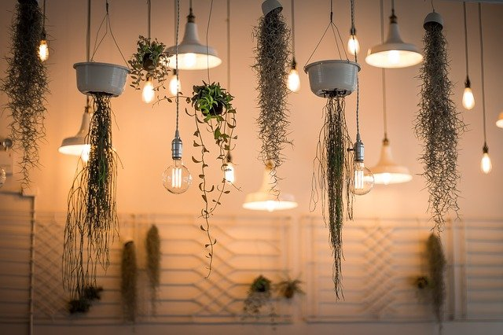

INTERIOR DESIGN IDEAS THAT PROMOTE A SENSE OF PEACEFULNESS
The technological age has increased the time people spend indoors, and with working from home becoming more common, that indoor time is mainly spent at home. People rely on tech for communication, tools for work, and various types of entertainment. The only thing that isn’t covered is nutrition, but give it time and it will surely get there, too.
With the ability to spend more time at home that technology provides, it is important to have a home atmosphere that promotes a healthy wellbeing. For those times you aren’t looking at a screen, here are some interior design tips to provide an atmosphere that makes you feel happy and at peace. Who knows, maybe it will even convince you to spend more time enjoying time away from the screen.
Room Size
The size of the room you’re in or the sense of spaciousness it provides can either make you feel free to move about or confined. Of the two feelings, there is one you naturally prefer over the other. Even if the rooms in your home aren’t large and roomy, don’t fret. Your health & wellness doesn’t need to be compromised. There are some tricks you can implement to provide the same feeling of freedom a larger room provides.
Choose to decorate in light colours because they reflect light, making the room appear more airy. Reduce any clutter that takes up valuable space, and choose furniture pieces that can serve a variety of purposes so you don’t need as much. Also, choose smaller decorative items that won’t overwhelm the balance of the room.
Other tricks include leaving windows uncovered, hanging mirrors, and using stripes on walls to give them more height. Living in a small space without feeling overwhelmed is a way of life, but it can be blissful so long as you can accept a bit of minimalism.
Proper Lighting
A room that allows plenty of natural light to enter feels warmer and more inviting. Having plenty of natural light can also decrease incidents of depression and anxiety. That’s because studies have shown that exposure to natural light boosts mood and feelings of happiness.
If you have a room that has small windows that don’t allow for much light, you can still make it feel bright. Choosing natural colours with hints of yellow and orange can mimic the colour of the sun, providing the same feelings of warmth. Or, you could paint the ceiling sky blue to brighten the interior. Colourful area rugs over light-coloured tile or wood will also brighten the room.

Colour
Colour schemes are important in how they impact mood. There are happy colours and there are gloomy colours. Colours you want to welcome into your home include bright shades like yellow, orange and green. Yellow and orange can give vitality to feelings of creativity, while a cool blue or green can provide a sense of peace and calm.
Colours you definitely want to avoid are dark shades of blue, red, and purple. Dark shades of these colours can bring your spirits down and sap you of motivation and energy.
Cleanliness
Having a clean home almost always equals having a happy home, but you have to make sure the colour, light, and roominess are addressed as well. When you top it off with cleanliness, you have a home that is perfect for spending any amount of time. After all, who wants to stay in a dirty home?
Also, having a dirty home can cause anxiety. While you may try to focus on work or something that gives you enjoyment, in the back of your mind you are feeling the stress of the dirty home. By keeping up with the cleaning, you’ll never fall behind.
It’s okay to be a homebody, but make sure the home you’re spending the majority of your time in is providing you with fulfillment. If it’s not, take a couple of weekends and make it right. Your mind will thank you for it.